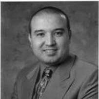

Prof. Dr. Kadir Kızılkaya: 1989 yılında Ankara Üniversitesi Ziraat Fakültesi Zootekni Bölümü’nden birincilikle mezun oldu. 1992 yılında Hayvan Yetiştirme ve Islahı Ana Bilim Dalı’nda asistan olarak göreve başladı ve aynı Ana Bilim Dalı’nda 1993 yılında Yüksek Lisans'ını tamamladı.
1992 yılında Yüksek Öğretim Kurumu’nun açtığı yurt dışı burs sınavını kazanarak; 1993 yılında, Aydın Adnan Menderes Üniversitesi (ADÜ) Ziraat Fakültesi Zootekni Bölümü Biyometri ve Genetik Ana Bilim Dalı’na atandı ve lisansüstü öğrenim için Amerika Birleşik Devletleri’ne gitti. Bu alanda Yüksek Lisans’ını Texas A&M Üniversitesi’nde 1996 yılında tamamladı ve ADÜ’de göreve başladı.
Dr. Kızılkaya Doktora eğitimi için 1997 yılında Michigan State Üniversitesi’nden Araştırma Görevlisi bursu kazandı ve kesikli verilerin dirençli istatistik modellerle analizi ve damızlık değerlerin tahmin edilmesi konusundaki doktora tezini 2002 yılında tamamlayarak, ADÜ’de Dr. Arş. Gör. olarak görevine başladı.
2003 yılında Yrd. Doç., 2006 yılında Doçent unvanı alan Dr. Kızılkaya, 2008-2011 yıllarında Iowa State Üniversitesi’nden kazandığı doktora sonrası çalışma bursuyla çiftlik hayvanlarında genom analizi çalışmalarına katılarak çiftlik hayvanlarında genom analizine dayalı damızlık değer tahminlerine yönelik istatistik model geliştirme ve programlama, ekonomik öneme sahip özelliklerle genlerin ilişkilendirilmeleri ve genom bölgelerinin belirlenmeleri konularında çalıştı.
2012 yılında TÜBİTAK Bilim İnsanı Destekleme Programı tarafından verilen 2219 Yurt Dışı Doktora Sonrası Araştırma Bursunu kazandı ve Iowa State Üniversitesi’nde genom analiz çalışmalarına devam etti.
2011 yılında profesör olan Dr. Kızılkaya, ADÜ Ziraat Fakültesi Biyometri ve Genetik Ana Bilim Dalı’nda genom analizi, hayvan ıslahı, genetik parametre tahminleri ve istatistik modelleme konularında araştırmalarına devam etmektedir.
Aydın Adnan Menderes Üniversitesi
Ziraat Fakültesi Zootekni Bölümü
Biyometri ve Genetik Ana Bilim Dalı
Güney Yerleşke - Koçarlı/Aydın
Tel: (256) 220 6382
e-mail: kkizilkaya@adu.edu.tr